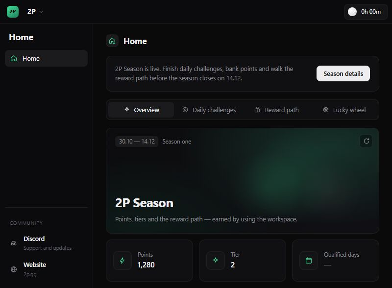
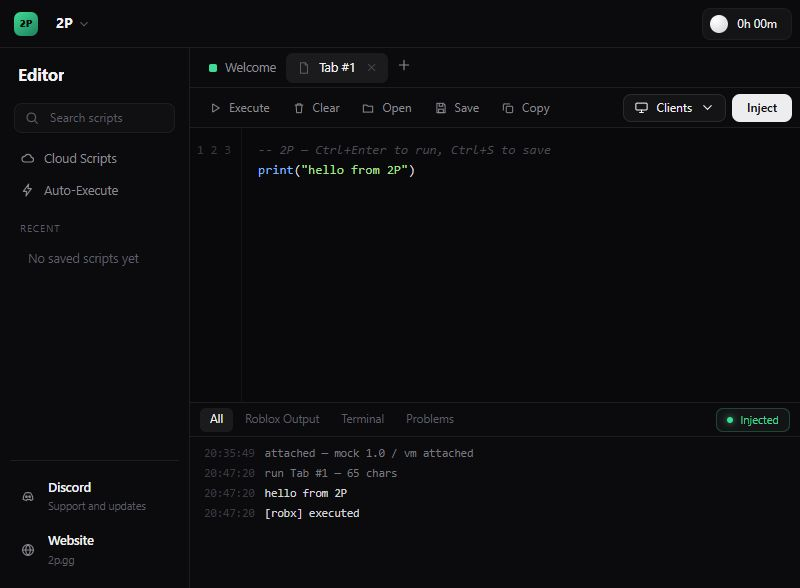
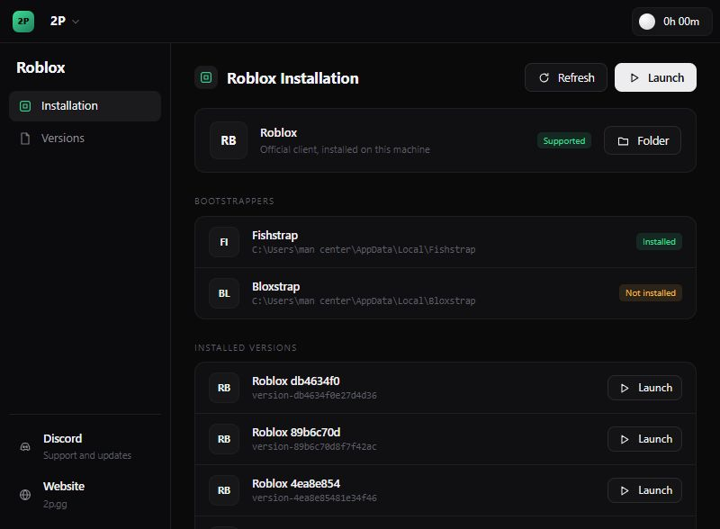

Luau editor
Syntax highlighting, a real gutter, auto-indent, Tab block-indent, Ctrl+Enter to run and Ctrl+S to save. Tabs keep their own state.
2P is one window for the whole loop: write Luau, run it against a live client, watch the console, keep the scripts that worked. No browser tab, no launcher chain, no ad wall.

Each part of the loop has a place, and every place is wired to the same pipe the module serves.
Syntax highlighting, a real gutter, auto-indent, Tab block-indent, Ctrl+Enter to run and Ctrl+S to save. Tabs keep their own state.
Roblox output, terminal and problems split into channels. Lines keep arriving after a run times out, so nothing the module printed is lost.
Works offline with a bundled catalog, then layers a remote index on top. Search, Run and Open, with the code cached so the list survives a restart.
Reads every version in %LOCALAPPDATA%\Roblox\Versions, shows which bootstrappers are present, and launches a client without patching anything.
Point an AI client at the bundled MCP server and it drives the same named pipe this window does. One dispatcher, no second implementation.
Six themes, optional interface grid, editor font size and tab width. Everything writes to one settings file and comes back on launch.




The desktop app is a self-contained Windows build. The browser bridge ships beside it: same UI, same dispatcher, no Electron.
Checksums are published with every release. Windows SmartScreen may ask once for an unsigned build.
The workspace ships free. A licence key unlocks the module side; browsing the editor, hub and settings works without one.
Whatever is installed under %LOCALAPPDATA%\Roblox\Versions. The module needs a signature table matched to the client build — the app will say when it is not injected instead of pretending.
The Roblox page detects both and shows whether they are installed. It never patches them; launching stays theirs.
Yes. Save to the local store, drag a .lua file onto the editor, or drop files into the auto-execute folder and they run in name order after injection.
Everything lives in %LOCALAPPDATA%\2P: settings, saved scripts, auto-execute files and the hub cache. Nothing is uploaded.
Because the script may still be running. Only the module's [robx] executed sentinel counts as success; a timeout is reported as a timeout.
Download, inject, execute. The rest of the loop is already wired.